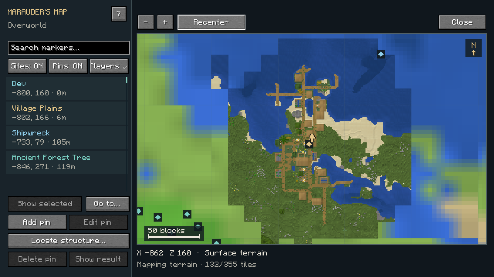
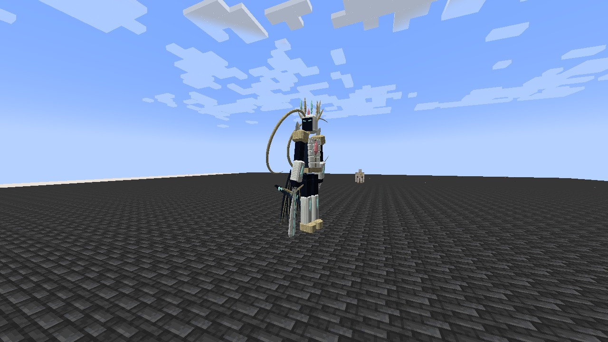

TensuraAdditionalAdditions is the active project. The Myths wiki is preserved as a discontinued archive. Each section has separate navigation, skills, progression, pictures and videos.

TensuraAdditionalAdditions
Active: Heavenly Restriction, Battlewills, cartography and world travel.
Open this wiki →
Tensura Myths
Discontinued archive. Final release: 0.36.1.
Open this wiki →Both require Tensura: Reincarnated, Minecraft 1.21.1 and NeoForge. They are alternative distributions; do not install them together.
Start reading
- AdditionalAdditions: Install · Heavenly Restriction · Skills · Battlewills · World travel.
- Myths archive: Status · Install · Skills · Races · Bosses.
Entries cover use, obtainment, damage types, costs, cooldowns and necessary limits. Values are defaults before defenses and other bonuses. Development notes and change history live outside the gameplay entries.
Offline edition
Download the wikis, extract the ZIP, and open index.html. Search is scoped to the selected addon; the main page searches both sections. Pictures and linked videos work offline.
AdditionalAdditions includes an F8 in-game guide.